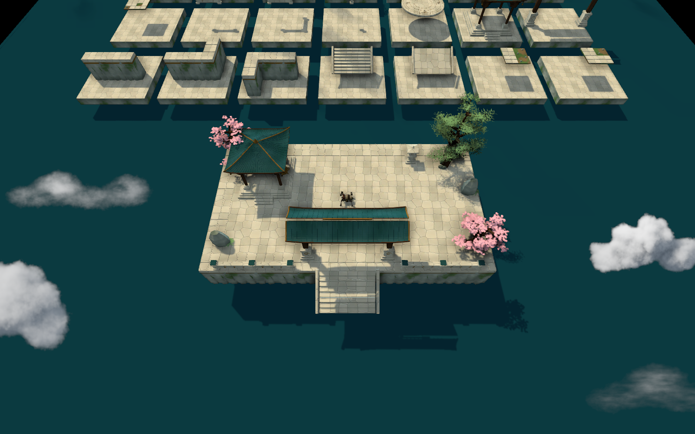

云组件 · 第二版对比
只调整云，模型与地面材质沿用已确认版本。以下均为 Blender 独立体积密度烘焙；不是参考图裁片。
厚云合并大小不等的主体，云带改为连续的湍流密度场。当前仍是固定视角云片，近距离或转动镜头会暴露平面性；只适合少量放在地形边界。
底层云海
上一版 原始 1536 × 896 RGBA
原始 1536 × 896 RGBA 崖边厚云
上一版 原始 1536 × 896 RGBA
原始 1536 × 896 RGBA 贴崖云带
上一版 原始 1536 × 896 RGBA
原始 1536 × 896 RGBA 薄雾
上一版 原始 1536 × 896 RGBA
原始 1536 × 896 RGBA Dota 2 局部测试

仅组件测试地图。主地图尚未铺设。
已确认的模型与材质库 · 透明边缘验证